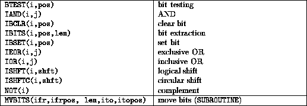
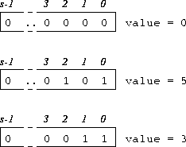

Summary,

Variables used as bit arguments must be INTEGER valued. The model for bit representation is that of an unsigned integer, for example,

The number of bits in a single variable depends on the compiler
For more information, click here